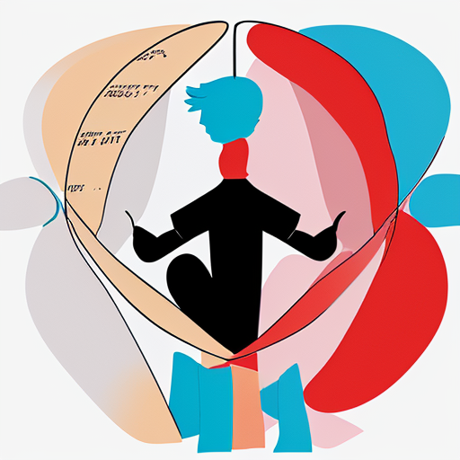
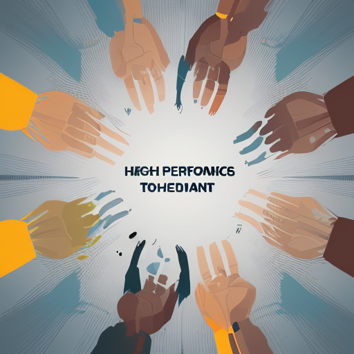
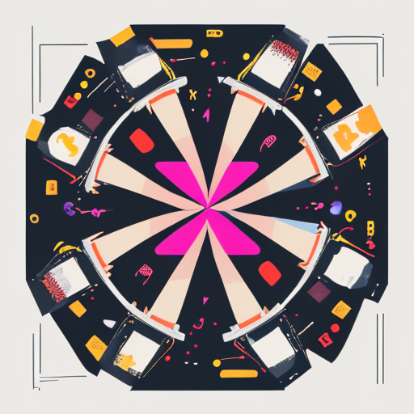
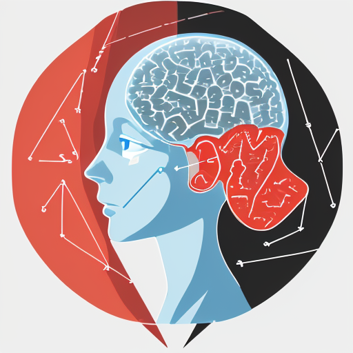

Book Summaries
Access summaries of 500+ self-help books, with actionable insights delivered in 15 minutes or less.
Categories
All
(599)
Career And Business
(33)
Creativity And Innovation
(42)
Decision Making And Critical Thinking
(46)
Emotional Intelligence
(49)
Health And Wellness
(50)
Influence And Motivation
(41)
Leadership And Influence
(48)
Marriage And Relationships
(40)
Mindset And Psychology
(49)
Productivity And Habits
(52)
Relationships And Communication
(48)
Spirituality And Meaning
(51)
Wealth And Finance
(50)
101 Questions to Ask Before You Get Married by H. Norman Wright
6 min
Essential conversations for premarital couples
H. Norman Wright
168 Hours by Laura Vanderkam
5 min
You have more time than you think - how to make the most of it
Laura Vanderkam
A Mind for Numbers by Barbara Oakley
6 min
How to excel at math and science by learning how to learn
Barbara Oakley
A New Earth by Eckhart Tolle
7 min
Awakening to your life’s purpose through consciousness
Eckhart Tolle
A Random Walk Down Wall Street by Burton Malkiel
6 min
The time-tested strategy for successful investing
Burton Malkiel
A Whack on the Side of the Head by Roger von Oech
5 min
How you can be more creative through mental locks
Roger von Oech
ACT with Love by Russ Harris
6 min
Stop struggling, reconcile differences, and strengthen your relationship
Russ Harris
After the Affair by Janis A. Spring
5 min
Healing the pain and rebuilding trust after infidelity
Janis A. Spring
After the Ecstasy, the Laundry by Jack Kornfield
5 min
How the heart grows wise on the spiritual path
Jack Kornfield
Asking the Right Questions by M. Neil Browne and Stuart M. Keeley
5 min
A guide to critical thinking and analysis
M. Neil Browne and Stuart M. Keeley
Atlas of the Heart by Brene Brown
5 min
Mapping meaningful connections and the language of human experience
Brene Brown
Atomic Habits by James Clear
5 min
Comprehensive guide to building good habits and breaking bad ones through small changes
James Clear
Attached by Amir Levine and Rachel Heller
5 min
The science of adult attachment and how it can help you find and keep love
Amir Levine and Rachel Heller
Authentic Happiness by Martin E.P. Seligman
5 min
Using positive psychology to realize your potential
Martin E.P. Seligman
Autobiography of a Yogi by Paramahansa Yogananda
6 min
A spiritual master’s extraordinary journey
Paramahansa Yogananda
Be Here Now by Ram Dass
6 min
A guide to consciousness and spiritual practices
Ram Dass
Becoming Emotionally Whole by Charles Stanley
6 min
Change your thoughts to be happier and healthier
Charles Stanley
Being Logical by D.Q. McInerny
4 min
A guide to good thinking and reasoning skills
D.Q. McInerny

Better Relationships by Sarah Rozenthuler
4 min
Practical ways to make your relationships work
Sarah Rozenthuler
Better Than Before by Gretchen Rubin
6 min
Mastering the habits of our everyday lives
Gretchen Rubin
Big Magic by Elizabeth Gilbert
5 min
Creative living beyond fear and embracing inspiration
Elizabeth Gilbert
Blue Mind by Wallace J. Nichols
5 min
The surprising science that shows how being near water makes us happier
Wallace J. Nichols
Blue Ocean Strategy by W. Chan Kim and Renee Mauborgne
5 min
How to create uncontested market space and make competition irrelevant
W. Chan Kim and Renee Mauborgne
Born to Run by Christopher McDougall
5 min
A hidden tribe, superathletes, and the greatest race the world has never seen
Christopher McDougall
Boundaries by Henry Cloud and John Townsend
5 min
When to say yes, how to say no to take control of your life
Henry Cloud and John Townsend
Boundaries in Marriage by Henry Cloud and John Townsend
5 min
Understanding and establishing healthy boundaries in marriage
Henry Cloud and John Townsend
Boundless by Ben Greenfield
5 min
Upgrade your brain, optimize your body, and defy aging
Ben Greenfield
Brain Maker by David Perlmutter
5 min
The power of gut microbes to heal and protect your brain
David Perlmutter
Breath by James Nestor
5 min
The new science of a lost art of breathing
James Nestor
Building Emotional Intelligence by Linda Lantieri
5 min
Techniques to cultivate inner strength in children
Linda Lantieri
Built to Last by Jim Collins and Jerry I. Porras
5 min
Successful habits of visionary companies
Jim Collins and Jerry I. Porras
Bulletproof Problem Solving by Charles Conn and Robert McLean
5 min
The one skill that changes everything
Charles Conn and Robert McLean
Business Model Generation by Alexander Osterwalder
5 min
A handbook for visionaries, game changers, and challengers
Alexander Osterwalder
Call Sign Chaos by Jim Mattis
5 min
Learning to lead
Jim Mattis
Captivate by Vanessa Van Edwards
6 min
The science of succeeding with people
Vanessa Van Edwards
Care of the Soul by Thomas Moore
6 min
A guide for cultivating depth and sacredness in everyday life
Thomas Moore
Change Your Thoughts, Change Your Life by Wayne W. Dyer
5 min
Living the wisdom of the Tao
Wayne W. Dyer
Change by Design by Tim Brown
5 min
How design thinking transforms organizations and inspires innovation
Tim Brown
Changing Minds by Howard Gardner
5 min
The art and science of changing our own and other people’s minds
Howard Gardner
Choose FI by Chris Mamula, Brad Barrett, and Jonathan Mendonsa
5 min
Your blueprint to financial independence
Chris Mamula, Brad Barrett, and Jonathan Mendonsa
Clear Thinking by Jared Horvath
5 min
Turning ordinary moments into extraordinary outcomes
Jared Horvath
Come as You Are by Emily Nagoski
5 min
Understanding female sexuality and enhancing intimate relationships
Emily Nagoski
Common Sense on Mutual Funds by John C. Bogle
5 min
New imperatives for the intelligent investor
John C. Bogle
Common Stocks and Uncommon Profits by Philip Fisher
6 min
Classic guide to intelligent stock market investment strategy
Philip Fisher
Communication in Marriage by Marcus and Ashley Kusi
6 min
Practical ways to improve communication in your marriage
Marcus and Ashley Kusi
Company of One by Paul Jarvis
6 min
Why staying small is the next big thing for business
Paul Jarvis
Compelling People by John Neffinger and Matthew Kohut
5 min
The hidden qualities that make us influential
John Neffinger and Matthew Kohut
Conceptual Blockbusting by James L. Adams
5 min
A guide to better ideas
James L. Adams
Conscious Loving by Gay Hendricks and Kathlyn Hendricks
6 min
The journey to co-commitment
Gay Hendricks and Kathlyn Hendricks
Contagious by Jonah Berger
5 min
Why things catch on and how to make ideas spread
Jonah Berger
Cracking Creativity by Michael Michalko
5 min
The secrets of creative genius
Michael Michalko
Creative Confidence by Tom Kelley and David Kelley
5 min
Unleashing the creative potential within us all
Tom Kelley and David Kelley
Creativity by Mihaly Csikszentmihalyi
5 min
Flow and the psychology of discovery and invention
Mihaly Csikszentmihalyi
Creativity, Inc. by Ed Catmull
5 min
Overcoming the unseen forces that stand in the way of true inspiration
Ed Catmull
Critical Thinking: Tools for Taking Charge of Your Learning and Your Life by Richard Paul and Linda Elder
5 min
Comprehensive framework for developing critical thinking skills
Richard Paul and Linda Elder
Crossing the Chasm by Geoffrey A. Moore
5 min
Marketing and selling disruptive products to mainstream customers
Geoffrey A. Moore
Crucial Conversations by Kerry Patterson, Joseph Grenny, Ron McMillan, Al Switzler
5 min
Tools for talking when stakes are high
Kerry Patterson, Joseph Grenny, Ron McMillan, Al Switzler
Damn Good Advice by George Lois
5 min
For people with talent who want to succeed
George Lois
Dare to Lead by Brene Brown
5 min
Brave work, tough conversations, whole hearts
Brene Brown
Debt-Free Forever by Gail Vaz-Oxlade
6 min
Take control of your money and your life
Gail Vaz-Oxlade
Decision Making for Leaders by Thomas L. Saaty
6 min
The Analytic Hierarchy Process for decisions in a complex world
Thomas L. Saaty
Decision Quality by Carl Spetzler
4 min
Value creation from better business decisions
Carl Spetzler
Decision Theory by Martin Peterson
4 min
A formal approach to decision making under uncertainty
Martin Peterson
Decisive by Chip Heath and Dan Heath
5 min
How to make better choices in life and work using a four-step process
Chip Heath and Dan Heath
Deep Work by Cal Newport
5 min
Rules for focused success in a distracted world and achieving peak productivity
Cal Newport
Delivering Happiness by Tony Hsieh
5 min
A path to profits, passion, and purpose
Tony Hsieh
Design-Driven Innovation by Roberto Verganti
5 min
Changing the rules of competition by radically innovating
Roberto Verganti
Difficult Conversations by Douglas Stone, Bruce Patton, Sheila Heen
5 min
How to discuss what matters most
Douglas Stone, Bruce Patton, Sheila Heen
Digital Minimalism by Cal Newport
5 min
Choosing a focused life in a noisy world
Cal Newport
Dirty Genes by Ben Lynch
6 min
A breakthrough program to treat the root cause of illness
Ben Lynch
Drive by Daniel H. Pink
5 min
The surprising truth about what motivates us
Daniel H. Pink
Eat That Frog! by Brian Tracy
5 min
21 great ways to stop procrastinating and get more done in less time
Brian Tracy
Eight Dates by John Gottman and Julie Schwartz Gottman
5 min
Essential conversations for a lifetime of love
John Gottman and Julie Schwartz Gottman
Emotional Agility by Susan David
5 min
Get unstuck, embrace change, and thrive in work and life
Susan David
Emotional First Aid by Guy Winch
5 min
Practical strategies for treating failure, rejection, guilt, and other everyday psychological injuries
Guy Winch
Emotional Freedom by Judith Orloff
5 min
Liberate yourself from negative emotions and transform your life
Judith Orloff
Emotional Intelligence 2.0 by Travis Bradberry and Jean Greaves
5 min
Strategies for increasing your emotional intelligence with the four core skills
Travis Bradberry and Jean Greaves
Emotional Intelligence and Mental Health by James Parker
5 min
The link between EQ and psychological well-being
James Parker
Emotional Intelligence at Work by Hendrie Weisinger
5 min
The untapped edge for success
Hendrie Weisinger
Emotional Intelligence by Daniel Goleman
5 min
Why it can matter more than IQ
Daniel Goleman
Emotional Intelligence for Children by Lawrence E. Shapiro
6 min
A guide to developing children’s EQ
Lawrence E. Shapiro
Emotional Intelligence for Dummies by Steven J. Stein
6 min
A practical guide to improving your EQ
Steven J. Stein
Emotional Intelligence for Project Managers by Anthony Mersino
5 min
The people skills you need to achieve outstanding results
Anthony Mersino
Emotional Intelligence for Sales Success by Colleen Stanley
6 min
Connect with customers and get results
Colleen Stanley
Emotional Intelligence in Education by Kateryna Keefer
5 min
Integrating research with practice
Kateryna Keefer
Emotional Intelligence in the Digital Age by James Bradford
5 min
Navigating emotions in a technology-driven world
James Bradford
Emotional Intelligence: Why It Can Matter More Than IQ by Daniel Goleman
4 min
The groundbreaking book that redefined intelligence and success
Daniel Goleman
Emotional Value by Janelle Barlow and Dianna Maul
5 min
Creating strong bonds with your customers
Janelle Barlow and Dianna Maul
Emotional and Sexual Intimacy in Marriage by Marcus and Ashley Kusi
6 min
How to connect or reconnect with your spouse
Marcus and Ashley Kusi
Essentialism by Greg McKeown
6 min
The disciplined pursuit of less but better, focusing on what truly matters
Greg McKeown
Everyone Communicates, Few Connect by John C. Maxwell
5 min
What the most effective people do differently
John C. Maxwell
Exactly What to Say by Phil M. Jones
5 min
The magic words for influence and impact
Phil M. Jones
Extreme Ownership by Jocko Willink and Leif Babin
6 min
How U.S. Navy SEALs lead and win
Jocko Willink and Leif Babin
Fast Food Nation by Eric Schlosser
5 min
The dark side of the American meal
Eric Schlosser
Fiber Fueled by Will Bulsiewicz
5 min
The plant-based gut health program for weight loss
Will Bulsiewicz
Fierce Conversations by Susan Scott
5 min
Achieving success at work and in life one conversation at a time
Susan Scott
Fighting for Your Marriage by Howard J. Markman
5 min
Positive steps for preventing divorce and preserving love
Howard J. Markman
Financial Freedom by Grant Sabatier
5 min
A proven path to all the money you will ever need
Grant Sabatier
Financial Intelligence by Karen Berman and Joe Knight
6 min
A manager’s guide to knowing what the numbers really mean
Karen Berman and Joe Knight
Finding Your Own North Star by Martha Beck
6 min
Claiming the life you were meant to live
Martha Beck
First Year of Marriage by Marcus and Ashley Willis
6 min
The newlywed’s guide to building a strong foundation
Marcus and Ashley Willis
First, Break All the Rules by Marcus Buckingham
6 min
What the world’s greatest managers do differently
Marcus Buckingham
Flourish by Martin E.P. Seligman
5 min
A visionary new understanding of happiness and well-being
Martin E.P. Seligman
Flow by Mihaly Csikszentmihalyi
5 min
The psychology of optimal experience and peak performance
Mihaly Csikszentmihalyi
Flow: The Psychology of Optimal Experience by Mihaly Csikszentmihalyi
5 min
Understanding and achieving optimal experiences
Mihaly Csikszentmihalyi
Food Rules by Michael Pollan
5 min
An eater’s manual for healthy eating
Michael Pollan
Four Thousand Weeks by Oliver Burkeman
5 min
Time management for mortals
Oliver Burkeman
Free to Focus by Michael Hyatt
6 min
A total productivity system to achieve more by doing less
Michael Hyatt
Games People Play by Eric Berne
5 min
The psychology of human relationships
Eric Berne
Gamestorming by Dave Gray
5 min
A playbook for innovators, rulebreakers, and changemakers
Dave Gray
Get Anyone to Do Anything by David J. Lieberman
5 min
Never feel powerless again with psychological secrets
David J. Lieberman
Get a Financial Life by Beth Kobliner
6 min
Personal finance in your twenties and thirties
Beth Kobliner
Getting Results the Agile Way by J.D. Meier
4 min
A personal results system for work and life
J.D. Meier
Getting Things Done by David Allen
10 min
The art of stress-free productivity through effective organization and task management
David Allen
Getting the Love You Want by Harville Hendrix
6 min
A guide for couples to transform conflict into connection and intimacy
Harville Hendrix
Getting to Yes by Roger Fisher and William Ury
6 min
Negotiating agreement without giving in
Roger Fisher and William Ury
Good Habits, Bad Habits by Wendy Wood
6 min
The science of making positive changes that stick
Wendy Wood
Good to Great by Jim Collins
6 min
Why some companies make the leap and others don’t
Jim Collins
Grit: The Power of Passion and Perseverance by Angela Duckworth
6 min
Why passion and resilience are the secrets to success
Angela Duckworth
Gut by Giulia Enders
5 min
The inside story of our body’s most underrated organ
Giulia Enders
HBR’s 10 Must Reads on Emotional Intelligence by Harvard Business Review
5 min
Essential reading on emotional intelligence in business
Harvard Business Review
Head Strong by Dave Asprey
5 min
The bulletproof plan to activate untapped brain energy
Dave Asprey
High Output Management by Andrew S. Grove
5 min
How to create and manage effective organizations
Andrew S. Grove

High Performance Habits by Brendon Burchard
5 min
How extraordinary people become that way
Brendon Burchard
His Needs, Her Needs by Willard F. Harley Jr.
6 min
Building an affair-proof marriage by meeting emotional needs
Willard F. Harley Jr.
Hold Me Tight by Sue Johnson
6 min
Seven conversations for a lifetime of love
Sue Johnson
Hooked by Nir Eyal
6 min
How to build habit-forming products
Nir Eyal
How Not to Die by Michael Greger
5 min
Discover foods scientifically proven to prevent and reverse disease
Michael Greger
How We Decide by Jonah Lehrer
5 min
The science of decision making and the brain’s two systems
Jonah Lehrer
How We Know What Isn’t So by Thomas Gilovich
5 min
The fallibility of human reason in everyday life
Thomas Gilovich
How to Decide by Annie Duke
5 min
Simple tools for making better choices based on decision science
Annie Duke
How to Make Money in Stocks by William O’Neil
6 min
A winning system in good times and bad
William O’Neil
How to Think About Analysis by Lara Alcock
5 min
Framework for developing analytical thinking skills
Lara Alcock
How to Win Friends and Influence People by Dale Carnegie
7 min
Classic guide to building meaningful relationships and influencing others positively
Dale Carnegie
Hyperfocus by Chris Bailey
5 min
How to be more productive in a world of distraction
Chris Bailey
I Will Teach You to Be Rich by Ramit Sethi
5 min
No guilt. No excuses. No BS. Just a 6-week program that works
Ramit Sethi
Ignore Everybody by Hugh MacLeod
5 min
And 39 other keys to creativity
Hugh MacLeod
In Defense of Food by Michael Pollan
6 min
An eater’s manifesto for healthy eating
Michael Pollan
Incognito by David Eagleman
5 min
The secret lives of the brain
David Eagleman
Indistractable by Nir Eyal
6 min
How to control your attention and choose your life
Nir Eyal
Influence Without Authority by Allan R. Cohen
6 min
How to lead when you’re not in charge
Allan R. Cohen
Influence: The Psychology of Persuasion by Robert Cialdini
5 min
The classic book on the six universal principles of influence
Robert Cialdini
Influencer: The Power to Change Anything by Kerry Patterson
6 min
How to make change inevitable
Kerry Patterson
Inner Engineering by Sadhguru
6 min
A yogi’s guide to joy
Sadhguru
Innovation Games by Luke Hohmann
5 min
Creating breakthrough products through collaborative play
Luke Hohmann
Innovator’s DNA by Jeff Dyer
5 min
Mastering the five skills of disruptive innovators
Jeff Dyer
Instant Influence by Michael V. Pantalon
4 min
How to get anyone to do anything fast
Michael V. Pantalon
Invisible Influence by Jonah Berger
5 min
The hidden forces that shape behavior
Jonah Berger
Judgment in Managerial Decision Making by Max H. Bazerman
5 min
Behavioral decision theory and managerial applications
Max H. Bazerman
Just Listen by Mark Goulston
6 min
Discover the secret to getting through to absolutely anyone
Mark Goulston
Lateral Thinking by Edward de Bono
4 min
Creativity step by step
Edward de Bono
Lead from the Outside by Stacey Abrams
5 min
How to build your future and make real change
Stacey Abrams
Leaders Eat Last by Simon Sinek
6 min
Why some teams pull together and others don’t
Simon Sinek
Leaders Made Here by Mark Miller
5 min
Building a leadership culture
Mark Miller
Leadershift by John C. Maxwell
5 min
The 11 essential changes every leader must embrace
John C. Maxwell
Leadership Is Language by L. David Marquet
5 min
The hidden power of what you say and what you don’t
L. David Marquet
Leadership Strategy and Tactics by Jocko Willink
6 min
Field manual for leadership
Jocko Willink
Leadership and Self-Deception by The Arbinger Institute
5 min
Getting out of the box of self-focused leadership
The Arbinger Institute
Leadership in Turbulent Times by Doris Kearns Goodwin
5 min
Lessons from presidents Lincoln, Theodore Roosevelt, FDR, and LBJ
Doris Kearns Goodwin
Leading Without Authority by Keith Ferrazzi
4 min
How the new power of co-elevation can break down silos
Keith Ferrazzi
Leading with Emotional Courage by Peter Bregman
6 min
How to have hard conversations, create accountability, and inspire action
Peter Bregman
Leading with Gratitude by Adrian Gostick and Chester Elton
5 min
Eight leadership practices for extraordinary business results
Adrian Gostick and Chester Elton
Lean Analytics by Alistair Croll and Benjamin Yoskovitz
5 min
Use data to build a better startup faster
Alistair Croll and Benjamin Yoskovitz
Learned Optimism by Martin E.P. Seligman
5 min
How to change your mind and your life through positive psychology
Martin E.P. Seligman
Lifespan by David A. Sinclair
6 min
Why we age and why we don’t have to
David A. Sinclair
Living Buddha, Living Christ by Thich Nhat Hanh
6 min
Finding unity between Buddhist and Christian spirituality
Thich Nhat Hanh
Love Must Be Tough by James Dobson
5 min
New hope for marriages in crisis and protecting your marriage
James Dobson
Love Sense by Sue Johnson
6 min
The revolutionary new science of romantic relationships
Sue Johnson
Love That Lasts by Jefferson and Alyssa Bethke
5 min
Building a marriage that will go the distance
Jefferson and Alyssa Bethke
Love and Respect by Emerson Eggerichs
5 min
Understanding the different emotional needs of men and women
Emerson Eggerichs
Made to Stick by Chip Heath and Dan Heath
6 min
Why some ideas survive and others die
Chip Heath and Dan Heath
Make It Stick by Peter C. Brown
6 min
The science of successful learning and habit formation
Peter C. Brown
Make Time by Jake Knapp and John Zeratsky
6 min
How to focus on what matters every day
Jake Knapp and John Zeratsky
Make Your Bed by William H. McRaven
5 min
Little things that can change your life and maybe the world
William H. McRaven
Makers by Chris Anderson
5 min
The new industrial revolution through innovation
Chris Anderson
Making Ideas Happen by Scott Belsky
5 min
Overcoming the obstacles between vision and reality
Scott Belsky
Man’s Search for Meaning by Viktor E. Frankl
5 min
A profound exploration of finding meaning in all circumstances
Viktor E. Frankl
Marriage Meetings for Lasting Love by Marcia Naomi Berger
5 min
Weekly conversations for a lifetime of love
Marcia Naomi Berger
Marriage Rules by Harriet Lerner
5 min
A manual for the married and the coupled up
Harriet Lerner
Marriage and Family Therapy by Linda Metcalf
5 min
A practice-oriented approach to couples counseling
Linda Metcalf
Mating in Captivity by Esther Perel
5 min
Exploring desire, intimacy, and sexuality in long-term relationships
Esther Perel
Maximum Influence by Kurt W. Mortensen
6 min
The 12 universal laws of power persuasion
Kurt W. Mortensen
Measure What Matters by John Doerr
5 min
How Google, Bono, and the Gates Foundation rock the world with OKRs
John Doerr
Men Are from Mars, Women Are from Venus by John Gray
6 min
Understanding gender differences in communication and relationships
John Gray
Mental Models by Peter Hollins
4 min
30 thinking tools that separate the average from the exceptional
Peter Hollins
Messages by Matthew McKay
5 min
The communication skills book
Matthew McKay
Methods of Persuasion by Nick Kolenda
5 min
How to use psychology to influence human behavior
Nick Kolenda
Mind Over Mind by Chris Berdik
5 min
The surprising power of expectations
Chris Berdik
Mindful Relationship Habits by S.J. Scott and Barrie Davenport
6 min
25 practices for couples to enhance intimacy, nurture closeness, and grow a deeper connection
S.J. Scott and Barrie Davenport
Mindfulness and Emotional Intelligence by Jon Kabat-Zinn
5 min
The intersection of mindfulness and EQ
Jon Kabat-Zinn
Mindless Eating by Brian Wansink
5 min
Why we eat more than we think
Brian Wansink
Mindset by Carol S. Dweck
6 min
The new psychology of success through developing a growth mindset
Carol S. Dweck
Mindset: The New Psychology of Success by Carol S. Dweck
5 min
Understanding and developing a growth mindset for success
Carol S. Dweck
Mindware by Richard E. Nisbett
5 min
Tools for smart thinking and better decision making
Richard E. Nisbett
Mini Habits by Stephen Guise
6 min
Smaller habits, bigger results
Stephen Guise
Money: Master the Game by Tony Robbins
5 min
7 simple steps to financial freedom
Tony Robbins
Motivating People by Harvard Business Review
5 min
Expert solutions to everyday challenges
Harvard Business Review
Motivation: Biological, Psychological, and Environmental by Lambert Deckers
5 min
Understanding the science of motivation
Lambert Deckers
Move Your DNA by Katy Bowman
6 min
Restore your health through natural movement
Katy Bowman
Multipliers by Liz Wiseman
5 min
How the best leaders make everyone smarter
Liz Wiseman
Never Split the Difference by Chris Voss
5 min
A former FBI hostage negotiator’s guide to high-stakes negotiations
Chris Voss

Nine Lies About Work by Marcus Buckingham and Ashley Goodall
4 min
A freethinking leader’s guide to the real world
Marcus Buckingham and Ashley Goodall
Nonviolent Communication by Marshall B. Rosenberg
6 min
A language of life for creating peaceful solutions
Marshall B. Rosenberg
Nudge by Richard H. Thaler
5 min
Improving decisions about health, wealth, and happiness
Richard H. Thaler
One Up On Wall Street by Peter Lynch
5 min
How to use what you already know to make money in the market
Peter Lynch
Originals by Adam Grant
5 min
How non-conformists move the world
Adam Grant
Passionate Marriage by David Schnarch
5 min
Keeping love and intimacy alive in committed relationships
David Schnarch
Peace Is Every Step by Thich Nhat Hanh
6 min
The path of mindfulness in everyday life
Thich Nhat Hanh
Peak Performance by Brad Stulberg and Steve Magness
5 min
Elevate your game, avoid burnout, and thrive with the new science of success
Brad Stulberg and Steve Magness
Peak: Secrets from the New Science of Expertise by Anders Ericsson
5 min
Understanding how to achieve excellence through deliberate practice
Anders Ericsson
People Skills by Robert Bolton
5 min
How to assert yourself, listen to others, and resolve conflicts
Robert Bolton
Permission to Feel by Marc Brackett
6 min
Unlocking the power of emotions to help ourselves and our children thrive
Marc Brackett
Pitch Anything by Oren Klaff
5 min
An innovative method for presenting, persuading, and winning
Oren Klaff
Positive Communication in Marriage by Marcus Warner
4 min
Practical insights for building a strong relationship
Marcus Warner
Power Questions by Andrew Sobel and Jerold Panas
5 min
Build relationships, win new business, and influence others
Andrew Sobel and Jerold Panas
Powers of Two by Joshua Wolf Shenk
5 min
Finding the essence of innovation in creative pairs
Joshua Wolf Shenk
Pre-Suasion by Robert Cialdini
5 min
Revolutionary ways to influence and persuade through timing and context
Robert Cialdini
Predictably Irrational by Dan Ariely
5 min
The hidden forces that shape our decisions
Dan Ariely
Primal Leadership by Daniel Goleman
5 min
Unleashing the power of emotional intelligence in leadership
Daniel Goleman
Principles by Ray Dalio
5 min
Life and work principles that shape successful careers
Ray Dalio
Principles of Corporate Finance by Richard A. Brealey and Stewart C. Myers
5 min
Comprehensive guide to understanding corporate finance
Richard A. Brealey and Stewart C. Myers
Problem Solving 101 by Ken Watanabe
6 min
A simple book for smart people about breaking down complex problems
Ken Watanabe
Quiet: The Power of Introverts by Susan Cain
5 min
Understanding and harnessing the strengths of introverts
Susan Cain
Quit Like a Millionaire by Kristy Shen and Bryce Leung
6 min
No luck required guide to financial independence
Kristy Shen and Bryce Leung
Radical Candor by Kim Scott
8 min
Be a kick-ass boss without losing your humanity
Kim Scott
Raising an Emotionally Intelligent Child by John Gottman
6 min
The heart of parenting
John Gottman
Range by David Epstein
6 min
Why generalists triumph in a specialized world
David Epstein
Rational Choice in an Uncertain World by Reid Hastie and Robyn M. Dawes
5 min
The psychology of judgment and decision making
Reid Hastie and Robyn M. Dawes
Reasoning by Alec Fisher
5 min
An introduction to critical thinking and logic
Alec Fisher
Reclaiming Conversation by Sherry Turkle
6 min
The power of talk in a digital age
Sherry Turkle
Relationship Skills Workbook by Julia B. Colwell
5 min
Practical exercises for developing deep relationships
Julia B. Colwell
Rest by Alex Soojung-Kim Pang
6 min
Why you get more done when you work less
Alex Soojung-Kim Pang
Return to Love by Marianne Williamson
5 min
Reflections on the principles of A Course in Miracles
Marianne Williamson
Rework by Jason Fried and David Heinemeier Hansson
5 min
Change the way you work forever
Jason Fried and David Heinemeier Hansson
Rich Dad Poor Dad by Robert T. Kiyosaki
5 min
What the rich teach their kids about money that the poor and middle class do not
Robert T. Kiyosaki
Rich Woman by Kim Kiyosaki
5 min
A guide to financial independence for women
Kim Kiyosaki
Risk Savvy by Gerd Gigerenzer
5 min
How to make good decisions in an uncertain world
Gerd Gigerenzer
Say What You Mean by Oren Jay Sofer
6 min
A mindful approach to nonviolent communication
Oren Jay Sofer
Scale by Geoffrey West
5 min
The universal laws of growth, innovation, sustainability, and the pace of life
Geoffrey West
ScreamFree Marriage by Hal Edward Runkel
5 min
Calming down, growing up, and getting closer in relationships
Hal Edward Runkel
Security Analysis by Benjamin Graham and David Dodd
6 min
Principles and techniques of value investing
Benjamin Graham and David Dodd
Shoe Dog by Phil Knight
5 min
A memoir by the creator of Nike
Phil Knight
Shorter by Alex Soojung-Kim Pang
5 min
Work better, smarter, and less - here’s how
Alex Soojung-Kim Pang
Show Your Work! by Austin Kleon
6 min
10 ways to share your creativity and get discovered
Austin Kleon
Siddhartha by Hermann Hesse
4 min
A novel about one man’s spiritual journey to enlightenment
Hermann Hesse
Smart Choices by John S. Hammond, Ralph L. Keeney, and Howard Raiffa
5 min
A practical guide to making better decisions using a systematic approach
John S. Hammond, Ralph L. Keeney, and Howard Raiffa
Smart Thinking by Art Markman
6 min
Three essential keys to solve problems, innovate, and get things done
Art Markman
Smart Women Finish Rich by David Bach
5 min
9 steps to achieving financial security
David Bach
Smarter Faster Better by Charles Duhigg
5 min
The secrets of being productive in life and business
Charles Duhigg
So Good They Can’t Ignore You by Cal Newport
5 min
Why skills trump passion in the quest for work you love
Cal Newport
Social Intelligence by Daniel Goleman
6 min
The revolutionary new science of human relationships
Daniel Goleman
Sources of Power: How People Make Decisions by Gary Klein
5 min
Examines how experts make decisions under pressure using recognition-primed decision making
Gary Klein
Spark by John J. Ratey
6 min
The revolutionary new science of exercise and the brain
John J. Ratey
Sprint by Jake Knapp
5 min
How to solve big problems and test new ideas in just five days
Jake Knapp
Start Small, Stay Small by Rob Walling
6 min
A developer’s guide to launching a startup
Rob Walling
Start Where You Are by Pema Chodron
5 min
A guide to compassionate living
Pema Chodron
Start with Why by Simon Sinek
5 min
How great leaders inspire everyone to take action through purpose-driven leadership
Simon Sinek
Steal Like an Artist by Austin Kleon
4 min
10 things nobody told you about being creative
Austin Kleon
Stumbling on Happiness by Daniel Gilbert
5 min
Why we’re so bad at predicting what will make us happy
Daniel Gilbert
Subliminal by Leonard Mlodinow
6 min
How your unconscious mind rules your behavior
Leonard Mlodinow
Super Human by Dave Asprey
6 min
The bulletproof plan to age backward and maybe even live forever
Dave Asprey
Super Thinking by Gabriel Weinberg and Lauren McCann
5 min
The big book of mental models for better decision making
Gabriel Weinberg and Lauren McCann
Superforecasting by Philip E. Tetlock
5 min
The art and science of prediction
Philip E. Tetlock
Superforecasting: The Art and Science of Prediction by Philip E. Tetlock
5 min
Explores how to make better predictions and decisions through systematic thinking
Philip E. Tetlock
Switch by Chip Heath and Dan Heath
5 min
How to change things when change is hard
Chip Heath and Dan Heath
Talk Like TED by Carmine Gallo
6 min
The 9 public speaking secrets of the world’s top minds
Carmine Gallo
Team of Teams by Stanley McChrystal
5 min
New rules of engagement for a complex world
Stanley McChrystal
Thanks for the Feedback by Douglas Stone and Sheila Heen
5 min
The science and art of receiving feedback well
Douglas Stone and Sheila Heen
The $100 Startup by Chris Guillebeau
5 min
Reinvent the way you make a living, do what you love
Chris Guillebeau
The 21 Irrefutable Laws of Leadership by John C. Maxwell
7 min
Follow them and people will follow you
John C. Maxwell
The 4 Disciplines of Execution by Chris McChesney, Sean Covey, and Jim Huling
5 min
Achieving your wildly important goals
Chris McChesney, Sean Covey, and Jim Huling
The 4-Hour Body by Timothy Ferriss
5 min
An uncommon guide to rapid fat loss, incredible sex, and becoming superhuman
Timothy Ferriss
The 4-Hour Work Week by Timothy Ferriss
6 min
Escape 9-5, live anywhere, and join the new rich
Timothy Ferriss
The 5 AM Club by Robin Sharma
6 min
Own your morning, elevate your life
Robin Sharma
The 5 Love Languages by Gary Chapman
6 min
The secret to love that lasts through understanding different expressions of love
Gary Chapman
The 7 Habits of Highly Effective People by Stephen Covey
5 min
Powerful lessons in personal change and effectiveness
Stephen Covey
The 80/20 Principle by Richard Koch
4 min
The secret to achieving more with less
Richard Koch
The Accidental Creative by Todd Henry
6 min
How to be brilliant at a moment’s notice
Todd Henry
The Achievement Habit by Bernard Roth
5 min
Stop wishing, start doing, and take command of your life
Bernard Roth
The Adversity Advantage by Paul G. Stoltz and Erik Weihenmayer
5 min
Turning everyday struggles into everyday greatness
Paul G. Stoltz and Erik Weihenmayer
The Alchemist by Paulo Coelho
6 min
A mystical story about following your dreams and finding your destiny
Paulo Coelho
The Alliance by Reid Hoffman
5 min
Managing talent in the networked age
Reid Hoffman
The Antidote by Oliver Burkeman
5 min
Happiness for people who can’t stand positive thinking
Oliver Burkeman
The Art of Creative Thinking by Rod Judkins
5 min
89 ways to see things differently
Rod Judkins
The Art of Critical Decision Making by Michael A. Roberto
5 min
How great leaders approach tough choices
Michael A. Roberto
The Art of Happiness by Dalai Lama and Howard C. Cutler
5 min
A handbook for living through spiritual principles
Dalai Lama and Howard C. Cutler
The Art of Innovation by Tom Kelley
6 min
Lessons in creativity from IDEO, America’s leading design firm
Tom Kelley
The Art of Looking Sideways by Alan Fletcher
6 min
The ultimate guide to visual awareness
Alan Fletcher
The Art of Possibility by Rosamund Stone Zander
5 min
Transforming professional and personal life
Rosamund Stone Zander
The Art of Seduction by Robert Greene
6 min
Understanding the power of attraction and persuasion
Robert Greene
The Art of Talking to Anyone by Rosalie Maggio
6 min
Essential people skills for success in any situation
Rosalie Maggio
The Art of Thinking Clearly by Rolf Dobelli
5 min
Better thinking through cognitive science
Rolf Dobelli
The Art of Thought by Graham Wallas
6 min
A pioneering account of the creative process
Graham Wallas
The Art of War by Sun Tzu
5 min
Ancient wisdom on strategy and leadership
Sun Tzu
The Art of Woo by G. Richard Shell and Mario Moussa
6 min
Using strategic persuasion to sell your ideas
G. Richard Shell and Mario Moussa
The Artist’s Journey by Steven Pressfield
6 min
The wake of the hero’s journey and the lifelong pursuit of meaning
Steven Pressfield
The Artist’s Way by Julia Cameron
6 min
A spiritual path to higher creativity
Julia Cameron
The Assertiveness Workbook by Randy J. Paterson
5 min
How to express your ideas and stand up for yourself
Randy J. Paterson
The Automatic Millionaire by David Bach
5 min
A powerful one-step plan to live and finish rich
David Bach
The Back of the Napkin by Dan Roam
4 min
Solving problems and selling ideas with pictures
Dan Roam
The Barefoot Investor by Scott Pape
5 min
The only money guide you’ll ever need
Scott Pape
The Bhagavad Gita by Eknath Easwaran (Translator)
6 min
Ancient wisdom for modern life
Eknath Easwaran (Translator)
The Biology of Belief by Bruce H. Lipton
6 min
Unleashing the power of consciousness, matter, and miracles
Bruce H. Lipton
The Blood Sugar Solution by Mark Hyman
6 min
The ultrahealthy program for losing weight, preventing disease
Mark Hyman
The Blue Zones by Dan Buettner
6 min
Lessons for living longer from people who’ve lived the longest
Dan Buettner
The Body Keeps the Score by Bessel van der Kolk
5 min
Brain, mind, and body in the healing of trauma
Bessel van der Kolk
The Body by Bill Bryson
5 min
A guide to what goes on inside your body and how to keep it running
Bill Bryson
The Bogleheads’ Guide to Investing by Taylor Larimore, Mel Lindauer, and Michael LeBoeuf
6 min
Simple investing strategies based on Vanguard founder’s principles
Taylor Larimore, Mel Lindauer, and Michael LeBoeuf
The Book of Awakening by Mark Nepo
6 min
Having the life you want by being present to the life you have
Mark Nepo
The Book of Human Emotions by Tiffany Watt Smith
6 min
From ambiguphobia to umpty - 154 words from around the world for how we feel
Tiffany Watt Smith
The Book of Joy by Dalai Lama and Desmond Tutu
6 min
Lasting happiness in a changing world
Dalai Lama and Desmond Tutu
The Book of Understanding by Osho
5 min
Creating your own path to freedom
Osho
The Book on Rental Property Investing by Brandon Turner
5 min
How to create wealth and passive income through real estate
Brandon Turner
The Book on the Taboo Against Knowing Who You Are by Alan Watts
6 min
Exploring the nature of self and consciousness
Alan Watts
The Bullet Journal Method by Ryder Carroll
6 min
Track the past, order the present, design the future
Ryder Carroll
The CEO Next Door by Elena L. Botelho
5 min
The 4 behaviors that transform ordinary people into world-class leaders
Elena L. Botelho
The Captain Class by Sam Walker
5 min
The hidden force that creates the world’s greatest teams
Sam Walker
The Celestine Prophecy by James Redfield
5 min
An adventure exploring synchronicity and spiritual insights
James Redfield
The Champion’s Mind by Jim Afremow
5 min
How great athletes think, train, and thrive
Jim Afremow
The Charisma Myth by Olivia Fox Cabane
5 min
How anyone can master the art and science of personal magnetism
Olivia Fox Cabane
The Checklist Manifesto by Atul Gawande
5 min
How to get things right using the power of checklists
Atul Gawande
The China Study by T. Colin Campbell
5 min
The most comprehensive study of nutrition ever conducted
T. Colin Campbell
The Circadian Code by Satchin Panda
5 min
Lose weight, supercharge your energy, and sleep well every night
Satchin Panda
The Coaching Habit by Michael Bungay Stanier
6 min
Say less, ask more & change the way you lead forever
Michael Bungay Stanier
The Complete Guide to Fasting by Jason Fung
6 min
Heal your body through intermittent, alternate-day, and extended fasting
Jason Fung
The Compound Effect by Darren Hardy
5 min
Small, smart choices + consistency + time = significant results
Darren Hardy
The Confidence Game by Maria Konnikova
5 min
Understanding why we fall for deception
Maria Konnikova
The Couple’s Communication Workbook by David Olsen
5 min
Exercises and techniques for developing communication skills
David Olsen
The Creative Brain by Ned Herrmann
5 min
The science of creative thinking
Ned Herrmann
The Creative Habit by Twyla Tharp
6 min
Learn it and use it for life
Twyla Tharp
The Creative Mind by Margaret A. Boden
5 min
Myths and mechanisms in creative thinking
Margaret A. Boden
The Creative Process Illustrated by W. Glenn Griffin
5 min
How advertising’s big ideas are born
W. Glenn Griffin
The Creativity Challenge by Tanner Christensen
5 min
Design, experiment, test, innovate
Tanner Christensen
The Culture Code by Daniel Coyle
6 min
The secrets of highly successful groups
Daniel Coyle
The Dance of Connection by Harriet Lerner
5 min
How to talk to someone when you’re mad, hurt, scared, frustrated, insulted, betrayed, or desperate
Harriet Lerner
The Decision Book by Mikael Krogerus and Roman Tschappeler
5 min
Fifty models for strategic thinking and decision making
Mikael Krogerus and Roman Tschappeler
The Design of Business by Roger Martin
5 min
Why design thinking is the next competitive advantage
Roger Martin
The Design of Everyday Things by Don Norman
6 min
The psychology of innovative design
Don Norman
The Designful Company by Marty Neumeier
5 min
How to build a culture of nonstop innovation
Marty Neumeier
The Diamond in Your Pocket by Gangaji
5 min
Discovering your true radiance
Gangaji
The Dichotomy of Leadership by Jocko Willink and Leif Babin
5 min
Balancing the challenges of extreme ownership
Jocko Willink and Leif Babin
The Difference by Scott E. Page
5 min
How diversity in thinking leads to better decisions and problem-solving
Scott E. Page
The Divorce Remedy by Michele Weiner Davis
6 min
Proven techniques for saving and improving your marriage
Michele Weiner Davis
The Doors of Perception by Aldous Huxley
5 min
Exploring the boundaries of consciousness
Aldous Huxley
The E-Myth Revisited by Michael E. Gerber
6 min
Why most small businesses don’t work and what to do about it
Michael E. Gerber
The EQ Difference by Adele B. Lynn
5 min
A powerful plan for putting emotional intelligence to work
Adele B. Lynn
The EQ Edge by Steven J. Stein and Howard E. Book
5 min
Emotional intelligence and your success
Steven J. Stein and Howard E. Book
The EQ Interview by Adele B. Lynn
5 min
Finding employees with high emotional intelligence
Adele B. Lynn
The EQ Leader by Steven J. Stein
5 min
Instilling passion, creating shared goals, and building meaningful organizations
Steven J. Stein
The Education of a Value Investor by Guy Spier
5 min
My transformative quest for wealth, wisdom, and enlightenment
Guy Spier
The Effective Executive by Peter F. Drucker
5 min
The definitive guide to getting the right things done
Peter F. Drucker
The Elements of User Experience by Jesse James Garrett
5 min
User-centered design for the web and beyond
Jesse James Garrett
The Emotion Code by Dr. Bradley Nelson
5 min
How to release your trapped emotions for abundant health
Dr. Bradley Nelson
The Emotional Brain by Joseph LeDoux
5 min
The mysterious underpinnings of emotional life
Joseph LeDoux
The Emotional Intelligence Activity Book by Adele B. Lynn
4 min
50 activities for promoting EQ at work
Adele B. Lynn
The Emotional Intelligence Leader by Patrick Lencioni
5 min
Leading with emotional intelligence in the workplace
Patrick Lencioni
The Emotional Intelligence Quick Book by Travis Bradberry and Jean Greaves
5 min
Everything you need to know to put your EQ to work
Travis Bradberry and Jean Greaves
The Emotional Intelligence Revolution by Cary Cherniss
5 min
How EQ is transforming organizations and leadership
Cary Cherniss
The Emotional Intelligence Skills Assessment by Steven J. Stein
5 min
Participant workbook
Steven J. Stein
The Emotional Intelligence Training Company by Rachel Green
4 min
A guide to implementing EQ training in organizations
Rachel Green
The Emotional Intelligence of Teams by Vanessa Urch Druskat
6 min
Understanding and developing the behaviors of successful teams
Vanessa Urch Druskat
The Emotional Life of Your Brain by Richard J. Davidson
5 min
How its unique patterns affect how you think, feel, and live
Richard J. Davidson
The Emotional Quotient by Robert Cooper
5 min
Developing your emotional intelligence for success
Robert Cooper
The Emotionally Intelligent Manager by David R. Caruso and Peter Salovey
5 min
How to develop and use the four key emotional skills of leadership
David R. Caruso and Peter Salovey
The End of Alzheimer’s by Dale Bredesen
6 min
The first program to prevent and reverse cognitive decline
Dale Bredesen
The Energy Plan by James Collins
4 min
Eat smart, feel strong, perform better
James Collins
The Essays of Warren Buffett by Warren Buffett and Lawrence A. Cunningham
5 min
Lessons for corporate America from the greatest investor
Warren Buffett and Lawrence A. Cunningham
The Essential Rumi by Coleman Barks (Translator)
5 min
Collection of spiritual poetry from the Sufi mystic
Coleman Barks (Translator)
The First 20 Minutes by Gretchen Reynolds
6 min
Surprising science reveals how we can exercise better, train smarter
Gretchen Reynolds
The First 90 Days by Michael D. Watkins
5 min
Critical success strategies for new leaders at all levels
Michael D. Watkins
The Five Dysfunctions of a Team by Patrick Lencioni
6 min
A leadership fable about building cohesive teams
Patrick Lencioni
The Founder’s Dilemmas by Noam Wasserman
5 min
Anticipating and avoiding the pitfalls that can sink a startup
Noam Wasserman
The Four Agreements by Don Miguel Ruiz
5 min
A practical guide to personal freedom through ancient Toltec wisdom
Don Miguel Ruiz
The Gene by Siddhartha Mukherjee
6 min
An intimate history of the science of heredity and health
Siddhartha Mukherjee
The Go-Giver by Bob Burg and John David Mann
6 min
A little story about a powerful business idea
Bob Burg and John David Mann
The Good Marriage by Judith S. Wallerstein
5 min
How and why love lasts based on a landmark study
Judith S. Wallerstein
The Grain Brain by David Perlmutter
5 min
The surprising truth about wheat, carbs, and sugar
David Perlmutter
The Great Mental Models by Shane Parrish
5 min
General thinking concepts for better reasoning and decision making
Shane Parrish
The Happiness Advantage by Shawn Achor
5 min
The seven principles of positive psychology
Shawn Achor
The Happiness Diet by Tyler Graham and Drew Ramsey
5 min
A nutritional prescription for a sharp brain, balanced mood, and lean body
Tyler Graham and Drew Ramsey
The Happiness Hypothesis by Jonathan Haidt
5 min
Finding modern truth in ancient wisdom
Jonathan Haidt
The Happiness of Pursuit by Chris Guillebeau
5 min
Finding the quest that will bring purpose to your life
Chris Guillebeau
The Hard Thing About Hard Things by Ben Horowitz
5 min
Building a business when there are no easy answers
Ben Horowitz
The Heart and Science of Teaching by C. Bobbi Hansen
5 min
Transformative applications of emotional intelligence in education
C. Bobbi Hansen
The Heart of Business by Hubert Joly
5 min
Leadership principles for the next era of capitalism
Hubert Joly
The Heart of Social Psychology by John G. Holmes
4 min
A backstage view of a passionate science
John G. Holmes
The Heart of the Buddha’s Teaching by Thich Nhat Hanh
6 min
Transforming suffering into peace, joy, and liberation
Thich Nhat Hanh
The I Ching by Richard Wilhelm (Translator)
5 min
Ancient Chinese wisdom for decision-making
Richard Wilhelm (Translator)
The Immune System Recovery Plan by Susan Blum
5 min
A doctor’s 4-step program to treating autoimmune disease
Susan Blum
The Immunity Fix by James DiNicolantonio and Siim Land
5 min
Strengthen your immune system, fight off infections
James DiNicolantonio and Siim Land
The Index Card by Helaine Olen and Harold Pollack
6 min
Why personal finance doesn’t have to be complicated
Helaine Olen and Harold Pollack
The Infinite Game by Simon Sinek
5 min
How to lead with an infinite mindset
Simon Sinek
The Innovation Algorithm by Genrich Altshuller
5 min
TRIZ, systematic innovation and technical creativity
Genrich Altshuller
The Innovator’s Dilemma by Clayton M. Christensen
5 min
When new technologies cause great firms to fail
Clayton M. Christensen
The Innovator’s Solution by Clayton M. Christensen
5 min
Creating and sustaining successful growth
Clayton M. Christensen
The Innovator’s Way by Peter J. Denning
5 min
Essential practices for successful innovation
Peter J. Denning
The Intelligence Trap by David Robson
5 min
Why smart people make dumb decisions and how to avoid these pitfalls
David Robson
The Intelligent Investor by Benjamin Graham
5 min
The definitive book on value investing
Benjamin Graham
The Intimacy Factor by Pia Mellody
5 min
Ground rules for overcoming barriers to connection
Pia Mellody
The Investment Answer by Daniel C. Goldie and Gordon S. Murray
5 min
Simple guide to successful investing
Daniel C. Goldie and Gordon S. Murray
The Language of Emotions by Karla McLaren
5 min
What your feelings are trying to tell you
Karla McLaren
The Laws of Simplicity by John Maeda
6 min
Design, technology, business, life
John Maeda
The Laws of Wealth by Daniel Crosby
5 min
Psychology and the secret to investing success
Daniel Crosby
The Leader’s Greatest Return by John C. Maxwell
5 min
Attracting, developing, and multiplying leaders
John C. Maxwell
The Leaders We Need by Michael Maccoby
5 min
And what makes us follow
Michael Maccoby
The Leadership Challenge by James M. Kouzes and Barry Z. Posner
5 min
How to make extraordinary things happen in organizations
James M. Kouzes and Barry Z. Posner
The Leadership Contract by Vince Molinaro
5 min
The fine print to becoming an accountable leader
Vince Molinaro
The Leadership Gap by Lolly Daskal
5 min
What gets between you and your greatness
Lolly Daskal
The Lean Startup by Eric Ries
5 min
How today’s entrepreneurs use continuous innovation to create successful businesses
Eric Ries
The Like Switch by Jack Schafer
4 min
An ex-FBI agent’s guide to influencing and attracting others
Jack Schafer
The Little Book That Still Beats the Market by Joel Greenblatt
5 min
A proven market-beating formula for growth investing
Joel Greenblatt
The Little Book of Common Sense Investing by John C. Bogle
6 min
The only way to guarantee your fair share of stock market returns
John C. Bogle
The Little Book of Value Investing by Christopher H. Browne
5 min
Essential value investing strategies
Christopher H. Browne
The Logic of Failure by Dietrich Dorner
5 min
Recognizing and avoiding error in complex situations
Dietrich Dorner
The Logic of Scientific Discovery by Karl Popper
6 min
Foundational work on critical thinking and scientific reasoning
Karl Popper
The Longevity Diet by Valter Longo
5 min
Discover the new science behind stem cell activation for a longer life
Valter Longo
The Longevity Paradox by Steven R. Gundry
5 min
How to die young at a ripe old age
Steven R. Gundry
The Lost Art of Listening by Michael P. Nichols
5 min
How learning to listen can improve relationships
Michael P. Nichols
The Lucky Years by David B. Agus
5 min
How to thrive in the brave new world of health
David B. Agus
The Marriage Book by Nicky and Sila Lee
6 min
Starting and sustaining a great marriage
Nicky and Sila Lee
The Marriage Builder by Larry Crabb
7 min
Creating true oneness to transform your marriage
Larry Crabb
The Marriage Challenge by Art and Laraine Bennett
5 min
A guide for strengthening your marriage based on personality types
Art and Laraine Bennett
The Marriage Checkup by James V. Cordova
6 min
A scientific program for sustaining and strengthening marital health
James V. Cordova
The Marriage Clinic by John Gottman
7 min
A scientifically based marital therapy approach
John Gottman
The Meaning of Marriage by Timothy Keller
5 min
Finding happiness in marriage through commitment and faith
Timothy Keller
The Millionaire Fastlane by M.J. DeMarco
5 min
Crack the code to wealth and live rich for a lifetime
M.J. DeMarco
The Millionaire Next Door by Thomas J. Stanley
6 min
The surprising secrets of America’s wealthy
Thomas J. Stanley
The Mind of the Leader by Rasmus Hougaard
5 min
How to lead yourself, your people, and your organization
Rasmus Hougaard
The Mind of the Strategist by Kenichi Ohmae
5 min
The art of Japanese business thinking and decision making
Kenichi Ohmae
The Mind’s Eye by Oliver Sacks
5 min
How the brain processes visual information
Oliver Sacks
The Mind-Gut Connection by Emeran Mayer
6 min
How the hidden conversation within our bodies impacts our health
Emeran Mayer
The Molecule of More by Daniel Z. Lieberman
5 min
How dopamine drives human behavior
Daniel Z. Lieberman
The Money Book for the Young, Fabulous & Broke by Suze Orman
6 min
Financial advice for young adults starting their careers
Suze Orman
The Money Manual by Tonya B. Rapley
5 min
A practical money guide to help you succeed on your financial journey
Tonya B. Rapley
The Motivation Myth by Jeff Haden
5 min
How high achievers really set themselves up to win
Jeff Haden
The Motive by Patrick Lencioni
6 min
Why so many leaders abdicate their most important responsibilities
Patrick Lencioni
The Myths of Innovation by Scott Berkun
5 min
The truth about how innovation really happens
Scott Berkun
The New Health Rules by Frank Lipman
5 min
Simple changes to achieve whole-body wellness
Frank Lipman
The New One Minute Manager by Ken Blanchard and Spencer Johnson
6 min
A modern take on the classic management method
Ken Blanchard and Spencer Johnson
The New Rules of Marriage by Terrence Real
6 min
Modern strategies for lasting love and intimacy
Terrence Real
The Now Habit by Neil Fiore
6 min
A strategic program for overcoming procrastination
Neil Fiore
The Obesity Code by Jason Fung
5 min
Unlocking the secrets of weight loss through insulin regulation
Jason Fung
The One Thing by Gary Keller
6 min
Focusing on the single most important task for extraordinary results
Gary Keller
The Only Investment Guide You’ll Ever Need by Andrew Tobias
6 min
Proven advice for smart investing
Andrew Tobias
The Optimism Bias by Tali Sharot
5 min
Why we’re wired to look on the bright side
Tali Sharot
The Organized Mind by Daniel J. Levitin
5 min
Thinking straight in the age of information overload
Daniel J. Levitin
The Owner’s Manual for the Brain by Pierce J. Howard
5 min
Everyday applications of neuroscience
Pierce J. Howard
The Paradox of Choice by Barry Schwartz
6 min
Why more is less in modern life
Barry Schwartz
The Perennial Philosophy by Aldous Huxley
6 min
An interpretation of the great mystics, East and West
Aldous Huxley
The Personal MBA by Josh Kaufman
5 min
Master the art of business without the cost of business school
Josh Kaufman
The Phoenix Project by Gene Kim
5 min
A novel about IT, DevOps, and helping your business win
Gene Kim
The Places That Scare You by Pema Chodron
5 min
A guide to fearlessness in difficult times
Pema Chodron
The Plant Paradox by Steven R. Gundry
5 min
Hidden dangers in ‘healthy’ foods that cause disease and weight gain
Steven R. Gundry
The Power Paradox by Dacher Keltner
5 min
How we gain and lose influence
Dacher Keltner
The Power of Body Language by Tonya Reiman
6 min
How to succeed in every business and social encounter
Tonya Reiman
The Power of Broke by Daymond John
5 min
How empty pockets, a tight budget, and a hunger for success can become your greatest competitive advantage
Daymond John
The Power of Connection by Lyn Delmastro-Thomson
5 min
Building trust and authentic relationships
Lyn Delmastro-Thomson
The Power of Different by Gail Saltz
5 min
The link between disorder and genius
Gail Saltz
The Power of Emotional Intelligence by Roger Reece
5 min
How to succeed in leadership with EQ
Roger Reece
The Power of Empathy by Arthur P. Ciaramicoli
5 min
A practical guide to creating intimacy, self-understanding, and lasting love
Arthur P. Ciaramicoli
The Power of Full Engagement by Jim Loehr and Tony Schwartz
5 min
Managing energy, not time, is the key to performance
Jim Loehr and Tony Schwartz
The Power of Habit by Charles Duhigg
5 min
Why habits exist and how they can be changed, backed by scientific discoveries
Charles Duhigg
The Power of Intention by Wayne W. Dyer
6 min
Learning to co-create your world your way
Wayne W. Dyer
The Power of Logical Thinking by Marilyn vos Savant
5 min
Easy lessons in dealing with problems and odds of everyday life
Marilyn vos Savant
The Power of Meaning by Emily Esfahani Smith
5 min
Finding fulfillment in a world obsessed with happiness
Emily Esfahani Smith
The Power of Moments by Chip Heath and Dan Heath
5 min
Why certain experiences have extraordinary impact
Chip Heath and Dan Heath
The Power of Myth by Joseph Campbell
5 min
Understanding life through universal mythological themes
Joseph Campbell
The Power of Noticing by Max Bazerman
5 min
What the best leaders see
Max Bazerman
The Power of Now by Eckhart Tolle
6 min
A guide to spiritual enlightenment through present moment awareness
Eckhart Tolle
The Power of Persuasion by Robert Levine
5 min
How we’re bought and sold
Robert Levine
The Power of Positive Leadership by Jon Gordon
5 min
How and why positive leaders transform teams and organizations
Jon Gordon
The Power of Purpose by Richard J. Leider
6 min
Find meaning, live longer, better
Richard J. Leider
The Power of Starting Something Stupid by Richie Norton
6 min
How to crush fear, make dreams happen, and live without regret
Richie Norton
The Power of Two by Susan Heitler
5 min
Secrets to a strong and loving marriage
Susan Heitler
The Power of Understanding People by Dave Mitchell
5 min
The key to strengthening relationships at work and home
Dave Mitchell
The Power of Understanding Yourself by Dave Mitchell
4 min
The key to self-discovery and creating a life of fulfillment
Dave Mitchell
The Practice by Seth Godin
5 min
Shipping creative work and building productive habits
Seth Godin
The Productivity Project by Chris Bailey
6 min
Accomplishing more by managing your time, attention, and energy
Chris Bailey
The Prophet by Kahlil Gibran
6 min
Poetic essays on life’s deepest questions
Kahlil Gibran

The Psychology of Intelligence Analysis by Richards J. Heuer Jr.
6 min
How to improve analytical thinking and decision making
Richards J. Heuer Jr.
The Psychology of Intelligence by Jean Piaget
5 min
Understanding cognitive development and learning
Jean Piaget
The Psychology of Money by Morgan Housel
5 min
Timeless lessons on wealth, greed, and happiness
Morgan Housel
The Psychology of Persuasion by Robert B. Cialdini
5 min
Understanding the psychology of influence
Robert B. Cialdini
The Psychology of Relationship Success by John Gottman
6 min
Understanding what makes relationships work
John Gottman
The Psychology of Self-Esteem by Nathaniel Branden
5 min
Understanding and developing healthy self-esteem
Nathaniel Branden
The Psychology of Selling by Brian Tracy
5 min
How to sell more, easier, and faster
Brian Tracy
The Quantum and the Lotus by Matthieu Ricard and Trinh Xuan Thuan
5 min
A journey to the frontiers where science and Buddhism meet
Matthieu Ricard and Trinh Xuan Thuan
The Relationship Cure by John Gottman
6 min
A 5-step guide to strengthening your marriage, family, and friendships
John Gottman
The Relationship Journal by Catherine Greer
6 min
A couples therapy workbook for communication and connection
Catherine Greer
The Richest Man in Babylon by George S. Clason
5 min
Classic parables about building wealth through saving and investing
George S. Clason
The Right Decision by James Stein
4 min
A mathematician reveals how the secrets of decision theory
James Stein
The Righteous Mind by Jonathan Haidt
5 min
Why good people are divided by politics and religion
Jonathan Haidt
The Road Less Traveled by M. Scott Peck
5 min
A new psychology of love, traditional values, and spiritual growth
M. Scott Peck
The Road to Character by David Brooks
5 min
Building rich inner lives marked by humility and moral depth
David Brooks
The Sacred Path of the Warrior by Chogyam Trungpa
6 min
Ancient wisdom for living with authenticity and power
Chogyam Trungpa
The Salt Fix by James DiNicolantonio
5 min
Why the experts got it all wrong about salt
James DiNicolantonio
The Science of Emotional Intelligence by Daniel Goleman and Richard Davidson
6 min
Understanding the brain and its emotional architecture
Daniel Goleman and Richard Davidson
The Science of Getting Rich by Wallace D. Wattles
6 min
Classic guide to creating wealth through creative visualization
Wallace D. Wattles
The Science of Influence by Kevin Hogan
5 min
How to get anyone to say ‘yes’ in 8 minutes or less
Kevin Hogan
The Science of Mind by Ernest Holmes
5 min
A philosophy for spiritual living
Ernest Holmes
The Science of Trust by John Gottman
5 min
Emotional attunement for couples
John Gottman
The Science of Well-Being by Tal Ben-Shahar
5 min
Understanding what makes life worth living
Tal Ben-Shahar
The Scout Mindset by Julia Galef
5 min
Why some people see things clearly and others don’t
Julia Galef
The Seat of the Soul by Gary Zukav
5 min
Understanding our spiritual evolution and life’s deeper purpose
Gary Zukav
The Secrets of Happy Families by Bruce Feiler
6 min
Strategies for creating stronger family bonds and relationships
Bruce Feiler
The Self-Aware Leader by Daniel Goleman and Robert Kaplan
5 min
Play to your strengths and lead like a champion
Daniel Goleman and Robert Kaplan
The Seven Big Myths about Marriage by Christopher Kaczor
5 min
Addressing common misconceptions about marriage
Christopher Kaczor
The Seven Principles for Making Marriage Work by John Gottman
5 min
Research-based principles to build lasting relationships
John Gottman
The Seven Principles of Making Marriage Work Workbook by John Gottman and Nan Silver
6 min
Practical exercises for implementing the seven principles
John Gottman and Nan Silver
The Seven Spiritual Laws of Success by Deepak Chopra
5 min
A practical guide to fulfilling your dreams
Deepak Chopra
The Shallows by Nicholas Carr
5 min
What the Internet is doing to our brains
Nicholas Carr
The Simple Dollar by Trent A. Hamm
5 min
How one man wiped out his debts and achieved the life of his dreams
Trent A. Hamm
The Simple Guide to a Minimalist Life by Leo Babauta
5 min
Simplifying your life to focus on what truly matters
Leo Babauta
The Simple Path to Wealth by JL Collins
6 min
Your road map to financial independence and a rich, free life
JL Collins
The Sleep Revolution by Arianna Huffington
5 min
Transforming your life one night at a time
Arianna Huffington
The Small Big by Steve J. Martin, Noah Goldstein, and Robert Cialdini
5 min
Small changes that spark big influence
Steve J. Martin, Noah Goldstein, and Robert Cialdini
The Social and Emotional Learning Playbook by Nancy Frey
5 min
A guide to developing students’ emotional intelligence
Nancy Frey
The Speed of Trust by Stephen M.R. Covey
6 min
The one thing that changes everything in leadership
Stephen M.R. Covey
The Sports Gene by David Epstein
5 min
Inside the science of extraordinary athletic performance
David Epstein
The State of Affairs by Esther Perel
5 min
Rethinking infidelity and exploring modern relationships
Esther Perel
The Talent Code by Daniel Coyle
5 min
Unlocking the secret of skill in sports, art, music, math, and more
Daniel Coyle
The Tao of Physics by Fritjof Capra
5 min
Exploring parallels between modern physics and Eastern mysticism
Fritjof Capra
The Telomere Effect by Elizabeth Blackburn and Elissa Epel
6 min
Living younger, healthier, longer
Elizabeth Blackburn and Elissa Epel
The Ten Faces of Innovation by Tom Kelley
6 min
IDEO’s strategies for beating the devil’s advocate
Tom Kelley
The Thinker’s Toolkit by Morgan D. Jones
5 min
14 powerful techniques for problem solving and decision making
Morgan D. Jones
The Third Wave by Steve Case
5 min
An entrepreneur’s vision of the future
Steve Case
The Three Pillars of Zen by Philip Kapleau
5 min
Teaching, practice, and enlightenment
Philip Kapleau
The Tibetan Book of Living and Dying by Sogyal Rinpoche
5 min
A comprehensive guide to life, death, and spiritual practice
Sogyal Rinpoche
The Time-Block Planner by Cal Newport
6 min
A daily method for deep work in a distracted world
Cal Newport
The Total Money Makeover by Dave Ramsey
5 min
A proven plan for financial fitness
Dave Ramsey
The Truth About Love by Patricia Love
5 min
The science behind attraction, satisfaction, and lasting relationships
Patricia Love
The Truth About Trust by David DeSteno
6 min
How it determines success in life, love, learning, and more
David DeSteno
The UltraMind Solution by Mark Hyman
5 min
Fix your broken brain by healing your body first
Mark Hyman
The Undoing Project by Michael Lewis
5 min
A friendship that changed our minds
Michael Lewis
The Untethered Soul by Michael A. Singer
5 min
The journey beyond yourself to inner freedom
Michael A. Singer
The Upside of Irrationality by Dan Ariely
6 min
The unexpected benefits of defying logic
Dan Ariely
The Upside of Stress by Kelly McGonigal
5 min
Why stress is good for you
Kelly McGonigal
The Value of Debt by Thomas J. Anderson
6 min
How to manage both sides of a balance sheet
Thomas J. Anderson
The War of Art by Steven Pressfield
6 min
Break through blocks and win your inner creative battles
Steven Pressfield
The Warren Buffett Way by Robert G. Hagstrom
5 min
Investment strategies of the world’s greatest investor
Robert G. Hagstrom
The Way of Zen by Alan W. Watts
6 min
Understanding Eastern philosophy and practice
Alan W. Watts
The Way of the Peaceful Warrior by Dan Millman
5 min
A story about finding your path in life
Dan Millman
The Wealth Choice by Dennis Kimbro
6 min
Success secrets of black millionaires
Dennis Kimbro
The White Coat Investor by James M. Dahle
5 min
A doctor’s guide to personal finance and investing
James M. Dahle
The Whole-Body Microbiome by B. Brett Finlay and Jessica M. Finlay
6 min
How to harness microbes for lifelong health
B. Brett Finlay and Jessica M. Finlay
The Willpower Instinct by Kelly McGonigal
5 min
How self-control works, why it matters, and what you can do to get more of it
Kelly McGonigal
The Wisdom of Insecurity by Alan Watts
5 min
A message for an age of anxiety
Alan Watts
The XX Brain by Lisa Mosconi
6 min
The groundbreaking science empowering women to prevent dementia
Lisa Mosconi
The Zen Teaching of Huang Po by John Blofeld (Translator)
6 min
On the transmission of mind
John Blofeld (Translator)
Things I Wish I’d Known Before We Got Married by Gary Chapman
6 min
Preparing for marriage and avoiding common pitfalls
Gary Chapman
Think Again by Adam Grant
5 min
The power of knowing what you don’t know
Adam Grant
Think Better by Tim Hurson
5 min
An innovator’s guide to productive thinking
Tim Hurson
Think Like a Designer by Tim Brown
5 min
How design thinking transforms organizations and inspires innovation
Tim Brown
Think Like a Freak by Steven D. Levitt and Stephen J. Dubner
5 min
Unconventional approaches to solving problems and making decisions
Steven D. Levitt and Stephen J. Dubner
Think Like a Programmer by V. Anton Spraul
5 min
An introduction to creative problem solving
V. Anton Spraul
Think Twice by Michael J. Mauboussin
5 min
Harnessing the power of counterintuition in decision making
Michael J. Mauboussin
Think and Grow Rich by Napoleon Hill
5 min
The classic guide to personal achievement and financial success
Napoleon Hill
Thinkertoys by Michael Michalko
5 min
A handbook of creative-thinking techniques
Michael Michalko
Thinking, Fast and Slow by Daniel Kahneman
5 min
Understanding the two systems that drive the way we think
Daniel Kahneman
Time Management from the Inside Out by Julie Morgenstern
5 min
The foolproof system for taking control of your schedule
Julie Morgenstern
Tiny Habits by BJ Fogg
5 min
The small changes that change everything
BJ Fogg
To Sell Is Human by Daniel H. Pink
6 min
The surprising truth about moving others
Daniel H. Pink
Too Good to Leave, Too Bad to Stay by Mira Kirshenbaum
5 min
A step-by-step guide to deciding whether to stay in or leave a relationship
Mira Kirshenbaum
Traction by Gabriel Weinberg and Justin Mares
6 min
How any startup can achieve explosive customer growth
Gabriel Weinberg and Justin Mares
Trading in the Zone by Mark Douglas
6 min
Master the market with confidence, discipline, and a winning attitude
Mark Douglas
Tribe of Mentors by Timothy Ferriss
5 min
Short life advice from the best in the world
Timothy Ferriss
Triggers by Marshall Goldsmith
5 min
Creating behavior that lasts, becoming the person you want to be
Marshall Goldsmith
Turn the Ship Around! by L. David Marquet
6 min
A true story of turning followers into leaders
L. David Marquet
Unshakeable by Tony Robbins
5 min
Your financial freedom playbook
Tony Robbins
Upstream by Dan Heath
5 min
How to solve problems before they happen using systems thinking
Dan Heath
Verbal Judo by George J. Thompson
5 min
The gentle art of persuasion and redirecting behavior
George J. Thompson
What Every Body Is Saying by Joe Navarro
5 min
An ex-FBI agent’s guide to speed-reading people
Joe Navarro
What I Love About You by Kate Marshall and David Marshall
4 min
A guided journal for expressing love and appreciation
Kate Marshall and David Marshall
What Makes Love Last? by John Gottman
7 min
Building trust and avoiding betrayal in relationships
John Gottman
What You Do Is Who You Are by Ben Horowitz
5 min
How to create your business culture
Ben Horowitz
Wheat Belly by William Davis
5 min
Lose the wheat, lose the weight, and find your path back to health
William Davis
When Sorry Isn’t Enough by Gary Chapman and Jennifer Thomas
6 min
Making things right in your relationships through apology
Gary Chapman and Jennifer Thomas
When Things Fall Apart by Pema Chodrosn
5 min
Heart advice for difficult times
Pema Chodrosn
When: The Scientific Secrets of Perfect Timing by Daniel H. Pink
6 min
Scientific insights into the best time to do everything
Daniel H. Pink
Where Good Ideas Come From by Steven Johnson
5 min
The natural history of innovation
Steven Johnson
Why Marriages Succeed or Fail by John Gottman
5 min
Predicting the success or failure of marriages based on interaction patterns
John Gottman
Why Motivating People Doesn’t Work by Susan Fowler
5 min
And what does: the new science of leading, energizing, and engaging
Susan Fowler
Why We Make Mistakes by Joseph T. Hallinan
5 min
How we look without seeing, forget things in seconds, and are all pretty sure we are way above average
Joseph T. Hallinan
Why We Sleep by Matthew Walker
6 min
Unlocking the power of sleep and dreams for better health
Matthew Walker
Willpower by Roy F. Baumeister and John Tierney
5 min
Rediscovering the greatest human strength
Roy F. Baumeister and John Tierney
Wired for Love by Stan Tatkin
5 min
How understanding your partner’s brain can help you defuse conflicts
Stan Tatkin
Wooden on Leadership by John Wooden
7 min
How to create a winning organization’s foundation
John Wooden
Words That Change Minds by Shelle Rose Charvet
6 min
The 14 patterns for mastering the language of influence
Shelle Rose Charvet
Words That Work by Frank Luntz
5 min
It’s not what you say, it’s what people hear
Frank Luntz
Working with Emotional Intelligence by Daniel Goleman
4 min
Applying emotional intelligence principles to achieve success in the workplace
Daniel Goleman
Yes!: 50 Scientifically Proven Ways to Be Persuasive by Noah J. Goldstein
5 min
Research-based techniques for increasing your influence
Noah J. Goldstein
You Need a Budget by Jesse Mecham
5 min
The proven system for breaking the paycheck-to-paycheck cycle
Jesse Mecham
Your Best Year Ever by Michael Hyatt
6 min
A 5-step plan for achieving your most important goals
Michael Hyatt
Your Brain at Work by David Rock
5 min
Strategies for overcoming distraction, regaining focus, and working smarter
David Rock
Your Leadership Legacy by Robert M. Galford
5 min
Why looking toward the future will make you a better leader today
Robert M. Galford
Your Money or Your Life by Vicki Robin and Joe Dominguez
6 min
9 steps to transforming your relationship with money
Vicki Robin and Joe Dominguez
Zen Mind, Beginner’s Mind by Shunryu Suzuki
6 min
Informal talks on Zen meditation and practice
Shunryu Suzuki
Zen to Done by Leo Babauta
6 min
The ultimate simple productivity system
Leo Babauta
Zero to One by Peter Thiel
5 min
Notes on startups, or how to build the future
Peter Thiel
No matching items